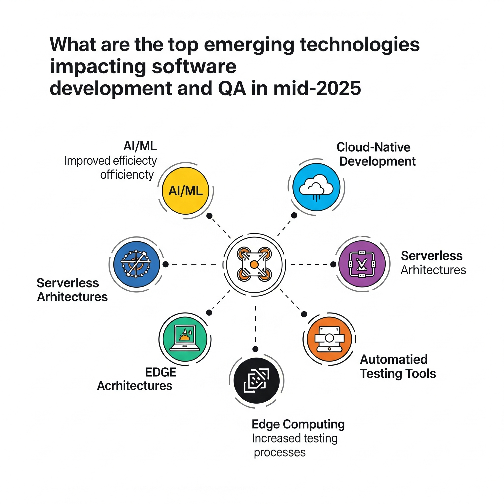

The Tech Landscape in Mid-2025: Emerging Technologies Reshaping Software Development and QA

Key Takeaways
- AI-powered development and testing tools are achieving 70% faster development cycles
- Quantum computing is transitioning from theory to practical experimentation
- Blockchain technology is expanding beyond cryptocurrencies into DevOps and QA
- Edge AI and IoT testing present new challenges for QA teams
The tech landscape is evolving at an unprecedented pace, with software development and quality assurance (QA) leading the charge in this transformation. As we approach mid-2025, groundbreaking technologies are revolutionizing how we build, test, and deploy applications—making processes faster, smarter, and more efficient.
In this blog, we'll explore:
- ✔ The most impactful emerging technologies of 2025
- ✔ How they're transforming software development and QA
- ✔ Key benefits and challenges for teams
- ✔ Strategies to stay ahead of the curve
Let's dive in!
1. AI-Powered Development & Testing (Beyond ChatGPT & Copilot)
Impact on Development
AI-driven tools like GitHub Copilot++, Google Project IDX, and Amazon CodeWhisperer are redefining coding efficiency by autocompleting entire functions and suggesting real-time debugging fixes. These advancements significantly accelerate development cycles.
Impact on QA
On the QA side, self-healing test automation platforms like Google Jules and Testim AI are reducing maintenance overhead by auto-fixing broken locators. Predictive test selection powered by machine learning prioritizes high-risk areas, ensuring smarter testing strategies.
Key Benefit: Teams can achieve 70% faster development cycles with fewer manual errors, enabling rapid delivery without compromising quality.
2. Quantum Computing for Complex Problem-Solving
Why It Matters in 2025?
Quantum computing is transitioning from theoretical exploration to practical experimentation, particularly in cryptography, optimization, and large-scale simulations. Cloud-based quantum services like IBM Quantum and AWS Braket allow developers to experiment without requiring specialized hardware.
QA Implications
- Stress testing systems at scales previously unimaginable.
- Addressing new security challenges, such as ensuring quantum-resistant encryption.
Key Challenge: Specialized skills are still required, and widespread adoption remains limited—quantum computing is not yet mainstream but is poised to disrupt traditional paradigms.
3. Blockchain Beyond Cryptocurrency (DevOps & QA Use Cases)
Development Impact
Blockchain technology is expanding beyond cryptocurrencies into areas like smart contracts (e.g., Ethereum, Solana) and decentralized applications (dApps). These innovations require entirely new testing frameworks and methodologies.
QA Impact
- Immutable test logs provide tamper-proof audit trails.
- Testing blockchain transactions ensures security, scalability, and compliance with decentralized protocols.
Key Benefit: Tamper-proof deployments enhance trust, making blockchain a cornerstone of secure and transparent application ecosystems.
4. Edge AI & IoT Testing Challenges
Why It's Growing in 2025?
The proliferation of real-time AI processing on edge devices—such as autonomous vehicles and smart factories—is being fueled by 5G expansion. This shift requires robust testing strategies tailored to distributed environments.
QA Challenges
- Validating low-latency performance across edge devices.
- Mitigating security risks in interconnected IoT networks.
Key Focus: Simulating real-world edge environments to ensure reliability and resilience.
5. Platform Engineering & Internal Developer Portals (IDPs)
Development Shift
Self-service platforms like Backstage and Port are streamlining CI/CD pipelines by providing standardized templates that reduce setup time. These tools empower developers to focus on innovation rather than infrastructure management.
QA Integration
- Automated compliance checks embedded in deployment pipelines.
- Shift-left testing integrated into IDPs ensures early defect detection.
Key Benefit: Faster developer onboarding and reduced DevOps bottlenecks, fostering collaboration between dev and QA teams.
6. AR/VR Testing in the Metaverse Era
Why It Matters Now?
Devices like Apple Vision Pro and Meta Quest 3 are driving enterprise adoption of augmented reality (AR) and virtual reality (VR). Spatial computing apps demand new testing tools and methodologies.
QA Challenges
- Testing 3D interactions, motion tracking, and spatial awareness.
- Ensuring performance under high GPU loads without compromising user experience.
Key Tool: Frameworks like Unity Test Framework and Appium for XR are becoming essential for validating immersive experiences.
7. Ethical AI & Bias Testing in Software
Growing Demand in 2025
Regulatory frameworks like the EU AI Act and the U.S. AI Bill of Rights mandate fairness audits for AI systems. Tools like IBM Fairness 360 help detect algorithmic bias, ensuring ethical accountability.
QA Responsibility
- Conducting bias testing on datasets and machine learning models.
- Performing ethical risk assessments before deployment.
Key Focus: Building inclusive, compliant AI systems that align with societal values and legal requirements.
8. Low-Code/No-Code + Pro-Code Hybrid Development
Impact on Dev Teams
Low-code/no-code platforms like OutSystems, Mendix, and Microsoft Power Apps enable rapid prototyping while allowing professional developers to customize backends for scalability.
QA Adjustments
- Testing auto-generated code for hidden flaws.
- Ensuring scalability beyond simple applications.
Key Benefit: Democratizing development while maintaining oversight to prevent technical debt and performance issues.
9. Cybersecurity Mesh & Zero Trust Testing
Why It's Critical in 2025?
With API breaches and supply chain attacks on the rise, Zero Trust Architecture (ZTA) has become standard practice. Security testing must adapt to these evolving threats.
QA's Role
- Penetration testing AI-driven vulnerabilities.
- Validating dynamic access controls and identity management policies.
Key Tool: Tools like OWASP ZAP and Burp Suite remain indispensable for securing APIs and microservices.
10. Green Computing & Sustainable Software Testing
2025 Trend
Sustainability is no longer optional. Initiatives like Google's Carbon-Intelligent Computing promote energy-efficient coding practices, while QA teams focus on minimizing cloud compute waste during testing.
QA's Contribution
- Optimizing test suites to reduce resource consumption.
- Measuring the carbon footprint of CI/CD pipelines.
Key Goal: Eco-friendly DevOps practices that align with global sustainability goals.
Conclusion: Adapt or Get Left Behind
The technologies shaping mid-2025 demand agile, upskilled teams who embrace:
- ✔ AI-augmented development & testing
- ✔ Security-first practices
- ✔ Ethical tech accountability
What's Next?
Experiment with one emerging tech this quarter. Upskill in AI, security, or quantum basics. Follow QA Blogs for more insights!
As we reach the midpoint of 2025, the software development and QA landscape is undergoing rapid transformation. Emerging technologies are reshaping how applications are built, tested, secured, and maintained. For QA engineers, developers, and tech leaders, staying ahead of these trends isn't just beneficial—it's essential.
At QA Blogs, our mission is to empower testers to evolve alongside the tech they test. Whether it's AI, blockchain, or serverless computing, one truth remains:
The best QA engineers of 2025 are not just testers—they are technologists, analysts, and strategists, driving quality from the inside out.
Want to Stay Ahead in QA?
Subscribe to QA Blogs for weekly deep dives, tutorials, tool reviews, and career advice tailored for quality professionals in the AI age.
Join Our Community of QA Professionals
Get exclusive access to in-depth articles, testing strategies, and industry insights. Stay ahead of the curve with our expert-curated content delivered straight to your inbox.
Nikunj Mistri
Founder, QA Blogs
About the Author